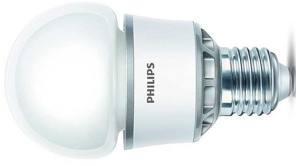

Немного о галогенных лампах накаливания

Галогенные лампы накаливания по структуре и принципу действия сравнимы с лампами накаливания. Но они содержат в газе-наполнителе незначительные добавки галогенов (бром, хлор, фтор, йод) или их соединения. С помощью этих добавок возможно в определенном температурном интервале практически полностью устранить потемнение колбы (вызванное испарением атомов вольфрама) и обусловленное этим уменьшение светового потока. Поэтому размер колбы в галогенных лампах накаливания может быть сильно уменьшен, вследствие чего с одной стороны можно повысить давление в газе-наполнителе, и с другой стороны становится возможным применение дорогих инертных газов криптон и ксенон в качестве газов-наполнителей.Вольфрамо-галогенный цикл
Существенные характеристики лампы накаливания - световая отдача и срок службы - в основном определяются температурой спирали: чем выше температура спирали, тем выше световая отдача, но тем короче срок службы.
Сокращение срока службы является последствием быстро растущей c поднятием температуры скорости испарения вольфрама, которая приводит с одной стороны, к потемнению колбы, а с другой - к прожиганию спирали.
Потемнение колбы можно эффективно предотвратить с помощью галогенной добавки к газу-наполнителю, которая в процессе вольфрамо-галогенного цикла не дает уже испаренному вольфраму осесть на стенках колбы. Испаренный из спирали в процессе работы лампы вольфрам попадает в результате диффузии или конвекции в температурную область (T1 < 1400 K) вблизи стенки колбы, где образует стабильное вольфрамо-галогенное соединение. Вместе с тепловым потоком эти соединения снова перемещаются в зону горячей спирали (T2 > 1400 K) и там снова распадаются.
Часть вольфрама снова восстанавливается на спирали, но уже на новом месте. Нормальный вольфрамо-галогенный цикл приводит т.о. лишь к предотвращению потемнения колбы, но не к увеличению срока службы, который закончится в результате разрыва спирали на возникших "горячих ячейках".
Галогенные лампы накаливания по структуре и принципу действия сравнимы с лампами накаливания. Но они содержат в газе-наполнителе незначительные добавки галогенов (бром, хлор, фтор, йод) или их соединения. С помощью этих добавок возможно в определенном температурном интервале практически полностью устранить потемнение колбы (вызванное испарением атомов вольфрама) и обусловленное этим уменьшение светового потока. Поэтому размер колбы в галогенных лампах накаливания может быть сильно уменьшен, вследствие чего с одной стороны можно повысить давление в газе-наполнителе, и с другой стороны становится возможным применение дорогих инертных газов криптон и ксенон в качестве газов-наполнителей.
Вольфрамо-галогенный цикл
Существенные характеристики лампы накаливания - световая отдача и срок службы - в основном определяются температурой спирали: чем выше температура спирали, тем выше световая отдача, но тем короче срок службы.
Сокращение срока службы является последствием быстро растущей c поднятием температуры скорости испарения вольфрама, которая приводит с одной стороны, к потемнению колбы, а с другой - к прожиганию спирали.
Потемнение колбы можно эффективно предотвратить с помощью галогенной добавки к газу-наполнителю, которая в процессе вольфрамо-галогенного цикла не дает уже испаренному вольфраму осесть на стенках колбы. Испаренный из спирали в процессе работы лампы вольфрам попадает в результате диффузии или конвекции в температурную область (T1 < 1400 K) вблизи стенки колбы, где образует стабильное вольфрамо-галогенное соединение. Вместе с тепловым потоком эти соединения снова перемещаются в зону горячей спирали (T2 > 1400 K) и там снова распадаются.
Часть вольфрама снова восстанавливается на спирали, но уже на новом месте. Нормальный вольфрамо-галогенный цикл приводит т.о. лишь к предотвращению потемнения колбы, но не к увеличению срока службы, который закончится в результате разрыва спирали на возникших "горячих ячейках".
Так называемый "регенеративный" цикл был бы возможен с участием фтора. Но этот способ сегодня еще не разработан из-за агрессивности фтора по отношению к кварцевому и тугоплавкому стеклу, а также по причине его сопротивляемости к ныне используемым галогенам.
Галогенные лампы накаливания с покрытием, отражающим инфракрасную составляющую
Галогенные лампы накаливания нового поколения, с отражающим инфракрасное излучение покрытием ламповой колбы, характеризуются значительным повышением световой отдачи. Это обусловлено следующим физическим процессом: Часть энергии, которая в обычных галогенных лампах накаливания преобразовывается в невидимое излучение инфракрасное излучение (более 60% производительности излучения), в лампах с покрытием частично преобразовывается снова в свете. Это становится возможным благодаря структуре покрытия, которое пропускает только видимый свет, а инфракрасное излучение по возможности полностью возвращает на спираль, где оно частично поглощается. Это вызывает повышение температуры спирали, вследствие чего подачу электроэнергии можно сократить. Световая отдача возрастает.
Так называемый "регенеративный" цикл был бы возможен с участием фтора. Но этот способ сегодня еще не разработан из-за агрессивности фтора по отношению к кварцевому и тугоплавкому стеклу, а также по причине его сопротивляемости к ныне используемым галогенам.
Галогенные лампы накаливания с покрытием, отражающим инфракрасную составляющую
Галогенные лампы накаливания нового поколения, с отражающим инфракрасное излучение покрытием ламповой колбы, характеризуются значительным повышением световой отдачи. Это обусловлено следующим физическим процессом: Часть энергии, которая в обычных галогенных лампах накаливания преобразовывается в невидимое излучение инфракрасное излучение (более 60% производительности излучения), в лампах с покрытием частично преобразовывается снова в свете. Это становится возможным благодаря структуре покрытия, которое пропускает только видимый свет, а инфракрасное излучение по возможности полностью возвращает на спираль, где оно частично поглощается. Это вызывает повышение температуры спирали, вследствие чего подачу электроэнергии можно сократить. Световая отдача возрастает.